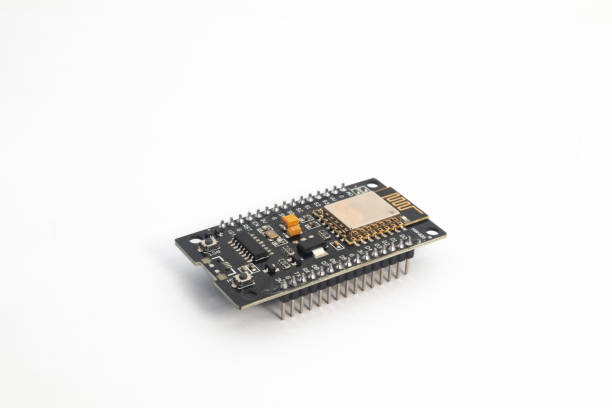
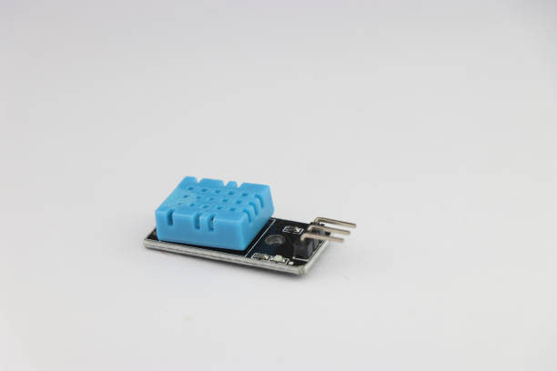
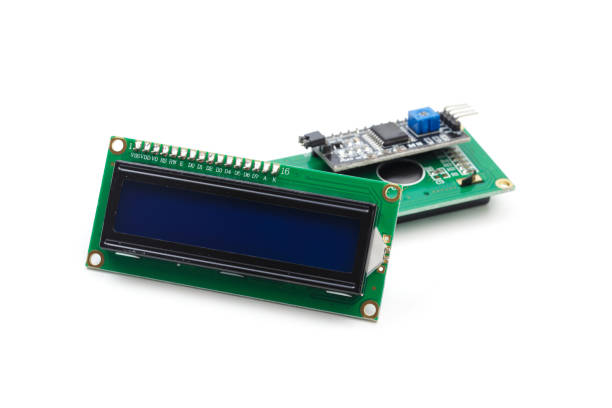
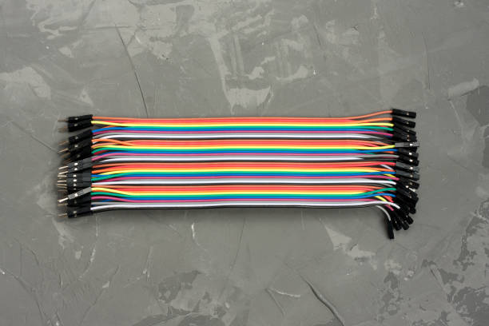
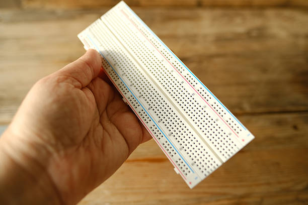

Penjelasan Hardware
ESP-12E

Merupakan mikrokontroler berbasis WiFi yang menjadi “otak” sistem. ESP-12E menerima data dari sensor, memprosesnya, dan bisa mengirim data tersebut ke server atau aplikasi IoT melalui jaringan WiFi. Tanpa ESP-12E, sistem hanya bisa bekerja secara lokal.
Sensor DHT11

Sensor yang berfungsi untuk mendeteksi suhu (dalam derajat Celsius) dan kelembapan udara (dalam persen). Sensor ini menghasilkan data digital yang mudah dibaca oleh ESP-12E.
LCD 16x2 I2C

Digunakan untuk menampilkan data suhu dan kelembapan secara langsung. Modul I2C membuat LCD hanya membutuhkan dua pin (SDA dan SCL), sehingga lebih hemat pin dibandingkan sambungan paralel biasa.
Kabel Jumper Male to Female

Kabel kecil yang dipakai untuk menghubungkan pin antar perangkat. Jenis male to female biasanya digunakan karena sensor atau modul punya pin header male, sementara breadboard atau board mikrokontroler juga menggunakan pin male, sehingga butuh konektor female di salah satu ujungnya.
Breadboard

Papan percobaan yang memungkinkan komponen elektronik dihubungkan tanpa harus disolder. Bagian dalam breadboard memiliki jalur konduktor yang menghubungkan lubang-lubang tertentu, sehingga kita bisa membangun rangkaian dengan cepat dan mudah diubah jika diperlukan.